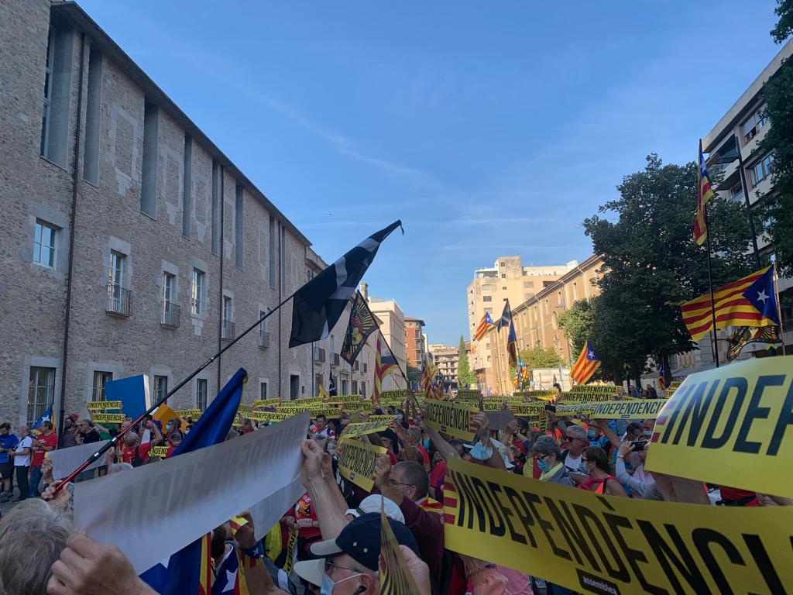
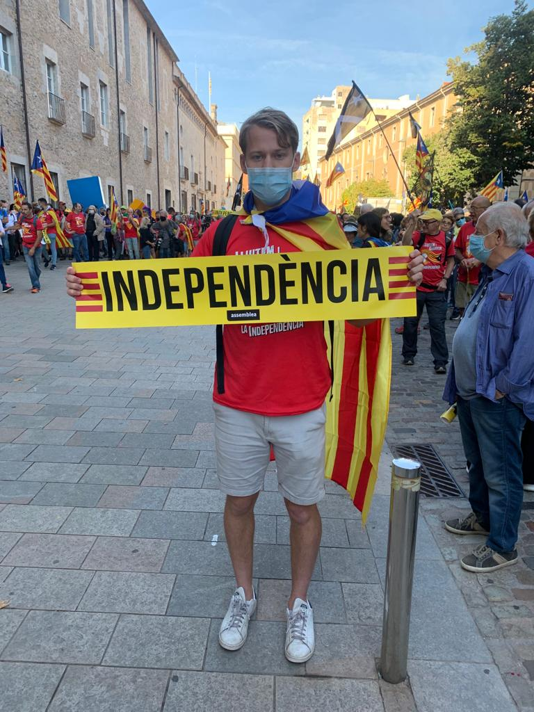

bestuur@assf.nl
Blog Detail
In 2021 was tijdelijk de wereldwijde COVID-19 pandemie even voorbij, tenminste dat leek zo. Maar ik mocht tijdens mijn master in ieder geval op exchange naar het buitenland. Barcelona was de bestemming.
Tijdens mijn geweldige periode in Barcelona kwam ik al snel achter de enorme spanning die heerst tussen de voor- en tegenstanders van de onafhankelijkheid van Catalonië. Dat ik s ’avonds tegen lokale studenten vol trots vertelde dat ik Spaans aan het leren was, werd mij bijvoorbeeld niet in dank afgenomen: ‘waarom leer je niet Catalaans, je bent toch in Barcelona?’. Maar ook tijdens de vakken die ik volgde aan de universiteit kwam ik erachter dat er een hoop wrok nog steeds is naar Madrid en de Spaanse regering.
We moesten leren wat voor slechte investering het aangelegde treinnetwerk was van alle hoofdsteden naar Madrid. Terwijl dit te dure project werd betaald van het belastinggeld uit Barcelona, de ‘belangrijkste’ stad van Spanje. Ik raakte steeds meer verdiept in het onderwerp, en maakte mee hoe er nog steeds wekelijks rellen waren in de stad, als protest tegen het onrecht dat men en haar familie is aangedaan. Ik wilde meer te weten komen waar het gevoel van onafhankelijkheid vandaan kwam, want economisch gezien is er geen positief aspect van onafhankelijkheid.
Ik sprak met enkele families die tegen onafhankelijkheid waren. In deze families wil men vooral naar de toekomst kijken, van hun en hun toekomstige kinderen. De strijd zorgt juist alleen maar voor verdeeldheid en ruzies in de stad Barcelona. Als Catalonië onafhankelijk wordt zullen bovendien meer bedrijven vertrekken uit Barcelona, de euro verdwijnen en zal men opnieuw tot de EU moeten toetreden, wat jaren kan duren. Daarom was ik juist weten waarom nog steeds 50% van Catalonië alsnog voor de onafhankelijk is.
Deze zoektocht resulteerde in het hoogtepunt van mijn ASSF project, wat ontstond nadat ik in contact was gekomen met de grootste organisatie van onafhankelijkheid, die mij uitnodigde om een weekend mee te komen tijdens de jaarlijkse herdenking van de dag dat men onafhankelijk had moeten worden. Dit weekend bestond uit een protestconcert in Figueres, een mars van 25km door Girona met 10.000 man en een demonstratie in Barcelona zelf. Tijdens dit weekend, wat begon toch wel helemaal alleen tussen veel niet Engels sprekende Catalanen, heb ik ontzettend veel mooie, lieve mensen leren kennen en gesproken, waaronder zelfs de ex-voorzitter van Catalonië. Ik heb enorm veel geleerd over de wrok en afkeer die men heeft tegen de staat. Vaak herinnerden families mij aan familieleden die werden geslagen door de politie, of zelfs werden opgepakt omdat ze gingen stemmen. Ze werden verboden om hun eigen taal te spreken. Madrid legt Catalonië nog steeds alles op en men is klaar met het in de macht liggen van anderen. Vaak voelde men nog steeds de pijn van vroeger en werden gesprekken emotioneel. Al met al maakte dit weekend mijn exchange periode een enorm unieke leef- en leerervaring, die ik nooit meer ga vergeten.
Copyright © Domain. All Rights Reserved.
Designed by HTML Codex